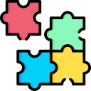
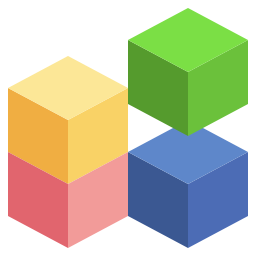

01 · Activitats
Activitats DAW 1
Les activitats i els mòduls del primer curs, organitzats per unitat.
Obrir la web Activitats DAW 1Portfolio · CFGS DAW
Set webs estàtiques fetes al llarg dels dos cursos: activitats, calendaris, horaris i qualificacions. Obri'n qualsevol i navega-hi directament.
Primer curs · 3 webs

01 · Activitats
Les activitats i els mòduls del primer curs, organitzats per unitat.
Obrir la web Activitats DAW 102 · Calendari
La planificació del primer curs, setmana a setmana.
Obrir la web Calendari DAW 103 · Qualificació
Els resultats d'aprenentatge i les qualificacions de cada mòdul.
Obrir la web Qualificació DAW 1Segon curs · 4 webs
04 · Activitats
Les activitats i els mòduls del segon curs.
Obrir la web Activitats DAW 2
05 · Calendari
Les setmanes del segon curs, dia a dia.
Obrir la web Calendari DAW 206 · Horari
L'horari setmanal de classes i mòduls.
Obrir la web Horari DAW 2
07 · Qualificació
Les qualificacions dels RA i els mòduls del segon curs.
Obrir la web Qualificació DAW 2